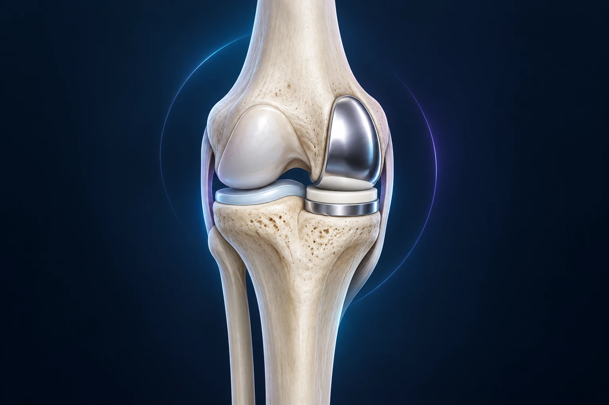

Prothèse partielle ou totale du genou : comment fait-on le choix ?

Une prothèse partielle remplace seulement une partie des surfaces articulaires du genou. Elle peut être adaptée lorsque l’arthrose reste suffisamment localisée et que le reste de l’articulation fonctionne de manière compatible. Une prothèse totale répond à d’autres situations. Le choix repose sur le bilan du genou, pas sur l’idée qu’une intervention plus petite serait toujours préférable.
Que signifie « partielle » ?
Le genou comporte plusieurs compartiments : les zones de contact interne et externe entre le fémur et le tibia, ainsi que l’articulation entre la rotule et le fémur. Une prothèse unicompartimentale remplace les surfaces d’un compartiment fémoro-tibial, en conservant les autres.
Imaginez un ensemble composé de plusieurs surfaces d’appui. Si une seule est très abîmée et que les autres restent adaptées, un remplacement limité peut être envisagé. Si les problèmes sont plus étendus, ce remplacement limité peut ne pas répondre à la situation. Cette image explique le principe, mais l’état des ligaments et l’équilibre du genou comptent aussi.
Une prothèse totale remplace plus largement les surfaces articulaires. Dans les deux cas, il s’agit d’une véritable chirurgie avec une anesthésie, des risques et une récupération à organiser. NHS, prothèses partielles et totales du genou.
Quels critères rendent une prothèse partielle possible ?
Le chirurgien recherche une atteinte suffisamment localisée, des compartiments restants compatibles avec le projet et un fonctionnement ligamentaire approprié. Il évalue également la mobilité, la déformation et sa réductibilité. L’emplacement de la douleur doit être cohérent avec les lésions.
Les radiographies sont importantes, mais ne suffisent pas toujours à répondre à toutes les questions. L’examen précise la stabilité et la façon dont le genou fonctionne. Dans certains cas, l’analyse réalisée pendant l’intervention peut conduire à modifier le projet ; cette éventualité doit être expliquée en amont. Worcestershire Acute Hospitals, prothèse unicompartimentale.
L’âge n’est donc pas le seul critère. Votre état de santé, vos attentes et votre niveau d’activité participent à la discussion. Une même photographie de radiographie, sans examen ni histoire clinique, ne permet pas de donner un avis fiable à distance.
Quels bénéfices peut-on en attendre ?
Une prothèse partielle conserve davantage de structures naturelles du genou. Chez des patients bien sélectionnés, elle peut offrir une récupération initiale plus rapide et une fonction satisfaisante. Ces possibilités doivent être présentées comme des bénéfices attendus, sans promettre une articulation indolore ou identique à celle d’avant l’arthrose.
La comparaison des techniques dépend beaucoup des patients étudiés et du suivi. Des travaux comme l’essai TOPKAT ont comparé prothèse partielle et totale chez des patients présentant une arthrose du compartiment interne et éligibles aux traitements étudiés. Leur portée ne s’étend pas à tous les genoux arthrosiques. Essai TOPKAT, comparaison clinique.
En pratique, la question est de savoir si vous remplissez les conditions permettant d’espérer ces bénéfices. Demandez quelles caractéristiques de votre genou soutiennent l’option proposée, plutôt que de choisir sur la seule notion de récupération « rapide ».
Quelles limites faut-il comprendre ?
L’arthrose peut évoluer dans les compartiments conservés. Une douleur peut aussi persister pour d’autres raisons. Comme tout implant, une prothèse partielle peut connaître une complication mécanique, une infection ou nécessiter une nouvelle intervention.
Si une reprise devient nécessaire, une conversion vers une prothèse totale peut être discutée. Sa complexité dépend de la situation rencontrée. Présenter cette possibilité comme un simple changement de pièce serait réducteur : il s’agit d’une nouvelle chirurgie qui doit être évaluée et préparée.
La prothèse totale comporte elle aussi des risques et des limites. L’enjeu n’est donc pas de trouver une option sans inconvénient, mais de mettre en regard les bénéfices et les contraintes de chaque stratégie pour votre genou. Frimley Health, information sur la prothèse unicompartimentale.
Peut-on continuer un traitement sans opération ?
Une indication possible de prothèse ne signifie pas qu’il faut nécessairement être opéré immédiatement. Si la gêne reste acceptable, un traitement médical et une activité adaptée peuvent être poursuivis avec un suivi. La décision intègre ce que vous avez essayé et ce qui reste limitant.
Décrivez votre quotidien : la distance de marche, le sommeil, les escaliers et les difficultés au travail. Il est utile de distinguer une douleur occasionnelle d’une limitation durable qui vous empêche de réaliser des activités importantes. Ces éléments orientent la discussion sur le moment opportun.
Avant la consultation, notez aussi les bénéfices et les effets indésirables des traitements reçus. Dire qu’une infiltration ou une rééducation a « échoué » sans préciser son effet et sa durée apporte moins d’informations qu’un récit concret.
La récupération est-elle forcément plus courte ?
Elle peut être plus rapide après une prothèse partielle, mais votre progression reste individuelle. Le contrôle de la douleur, la cicatrisation, la marche et la récupération musculaire doivent être suivis. Une intervention limitée n’autorise pas à sauter les étapes de rééducation. NHS, récupération après remplacement du genou.
La conduite, le travail et les loisirs ne reprennent pas sur un calendrier unique. Le côté opéré, les contraintes professionnelles et les gestes nécessaires à votre sport influencent les décisions. Prévoyez l’organisation pratique avant l’intervention, même si une hospitalisation courte est envisagée.
Demandez également quels signes doivent vous faire contacter l’équipe et comment seront organisés les contrôles. Un suivi clair aide à distinguer une fluctuation de récupération d’un problème qui mérite une évaluation.
Comment préparer une décision partagée ?
Vous pouvez poser trois questions : pourquoi une prothèse partielle serait-elle adaptée à mon genou, pourquoi une totale pourrait-elle être préférable, et quels résultats peut-on raisonnablement attendre dans mon cas ? Les réponses doivent relier la technique à vos symptômes et à votre projet.
Les informations du Dr François Lozach sur la chirurgie du genou donnent un premier aperçu. Pour examiner vos options à Sète, vous pouvez prendre rendez-vous avec le Dr François Lozach à Sète avec vos radiographies et vos comptes rendus.
Ces conseils sont d’ordre général et ne remplacent pas un avis médical personnalisé.